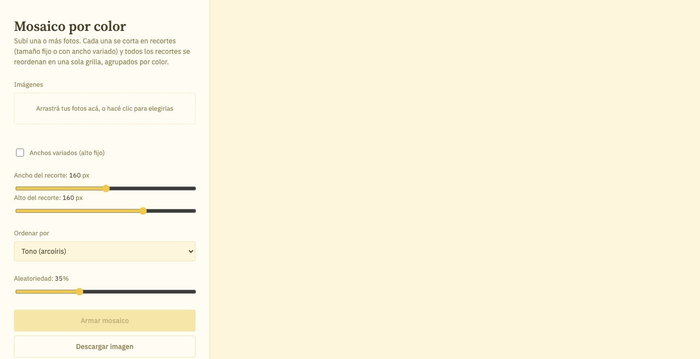

← Volver a proyectos
Web mosaicos
Web · Arte digital · Efecto visual · 2026Esta web surge de la intención de mezclar fotografías y texturas, explorando sus posibilidades compositivas. Para ello, desarrollé una propuesta visual que posteriormente programé en p5.js y convertí en una página web.
